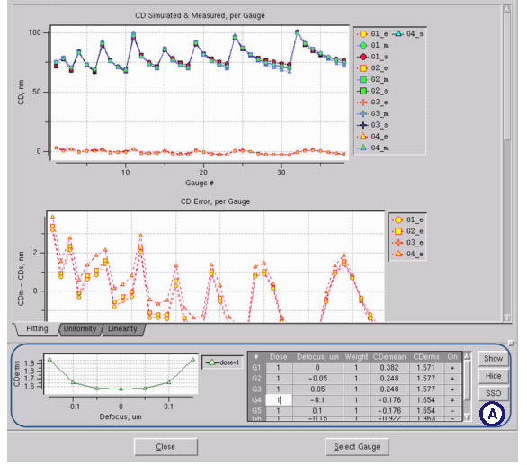
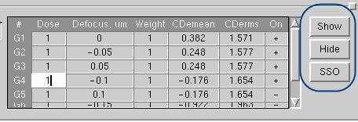

When super gauge
data objects are used in CM1 calculations, each gauge data object
inside the super gauge data object has a unique dose and focus value associated
with it.
CM1 Center uses this data in two ways:
Gauge data with a higher specified weight
than 1 is treated with more importance than lesser weighted gauge
data sets.
Each gaugedata object is shown in its
own plot in the Analysis Graph dialog box. A hidden panel is added
to the tabs showing the dose versus defocus plot, and a way to select
the gaugedata objects for filtered viewing.
Prerequisites
A
super gauge data object
You
must have completed the procedure, “Performing Fine CM1 Calibration,” with the super gauge data object
in order to have the fine calibration log used in this procedure.
Procedure
- Follow the instructions in “Examining the CM1 Model for Quality”, loading the log file from
the super gauge data calibration run. When you click the Analyze button,
notice the gauge data selection and viewing controls added to the
bottom of the Analysis Graph (Figure 1).
Figure 1. Analysis Graph With
Super Gaugedata
- Use the gaugedata control
buttons in the lower right corner (A in Figure 1) to control what data is displayed.
By default, all gauge objects are shown (numbered G1 through Gn). You
can use Shift-click to select multiple gauge data lines.
Show — Updates the graph
with the currently-selected gauge data item(s).
Hide — Removes the currently-selected
item(s).
SSO — Executes a “Show
Selected Only” action. Any currently-selected gauge lines are shown;
any gauge lines not selected are hidden.
Figure 2. Super Gaugedata Control Buttons